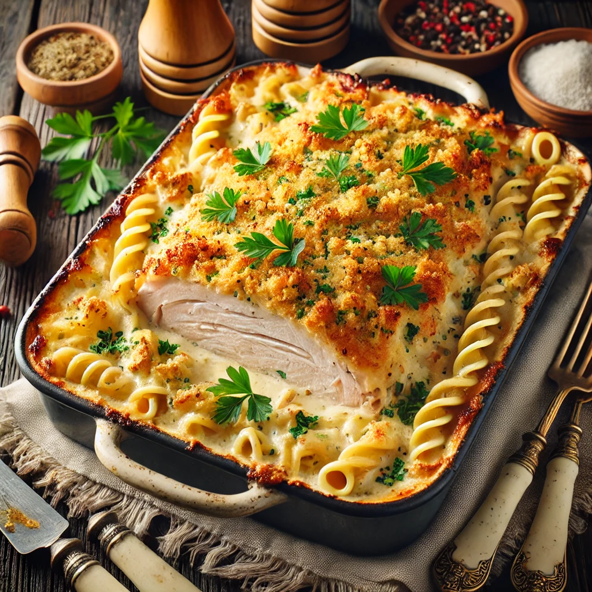

Turkey Tetrazzini
Description: A creamy and indulgent Turkey Tetrazzini made with leftover turkey, pasta, and a mix of Alfredo and pesto sauces, topped with golden breadcrumbs.

Ingredients
- 3 cups cooked turkey, shredded or cubed
- 12 oz cooked spaghetti or linguine
- 1 cup Alfredo pasta sauce
- 1 cup basil pesto Alfredo sauce
- 1/2 cup regular basil pesto sauce
- 1/2 cup grated Parmesan cheese
- 1/2 cup sharp cheddar cheese, shredded
- 1/2 cup bread crumbs
- 2 tablespoons olive oil
- 1/2 teaspoon garlic powder
- 1/2 teaspoon dried oregano
- 1/4 teaspoon cayenne pepper (optional)
- 2 tablespoons fresh parsley, chopped (for garnish)
Instructions
- Preheat oven to 375°F (190°C) and grease a large baking dish with olive oil.
- Cook spaghetti or linguine according to package instructions. Drain and set aside.
- In a large bowl, combine shredded turkey, Alfredo sauce, pesto Alfredo sauce, and regular pesto. Mix until well coated.
- Fold the cooked pasta into the turkey and sauce mixture. Add Parmesan and sharp cheddar cheeses, and stir gently to combine.
- Pour the mixture into the greased baking dish. Sprinkle bread crumbs evenly on top and drizzle with olive oil.
- Bake uncovered for 25-30 minutes, or until the top is golden and bubbly.
- Garnish with fresh parsley and serve warm.